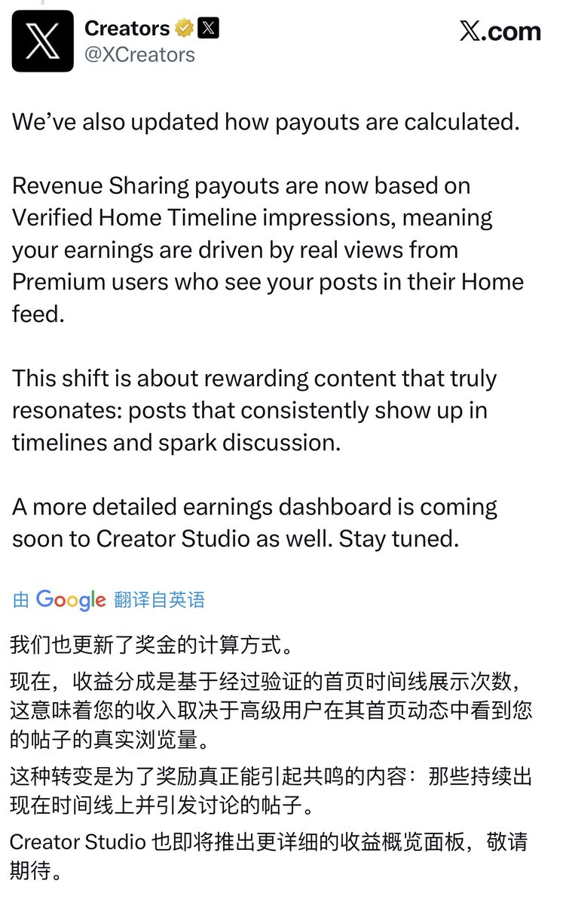
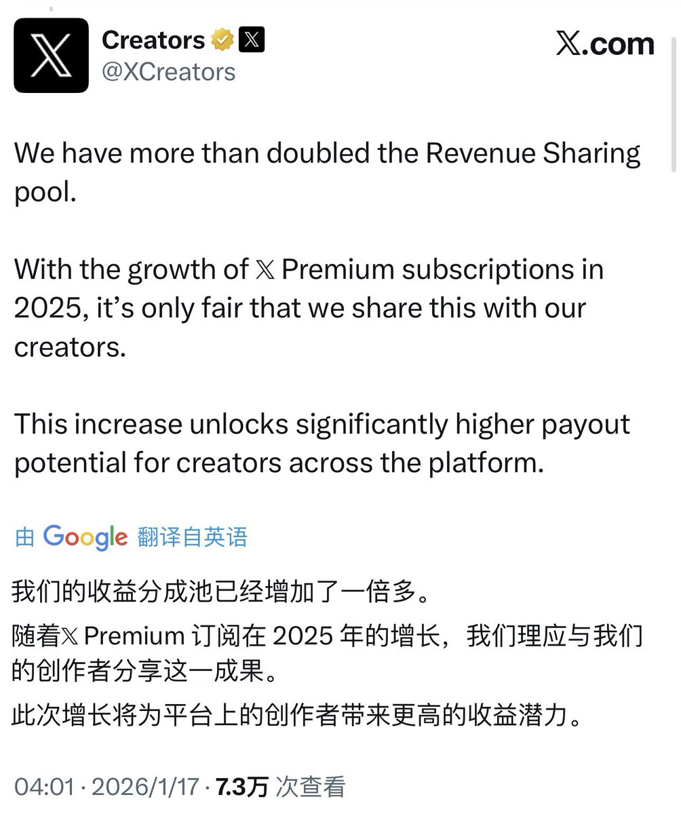
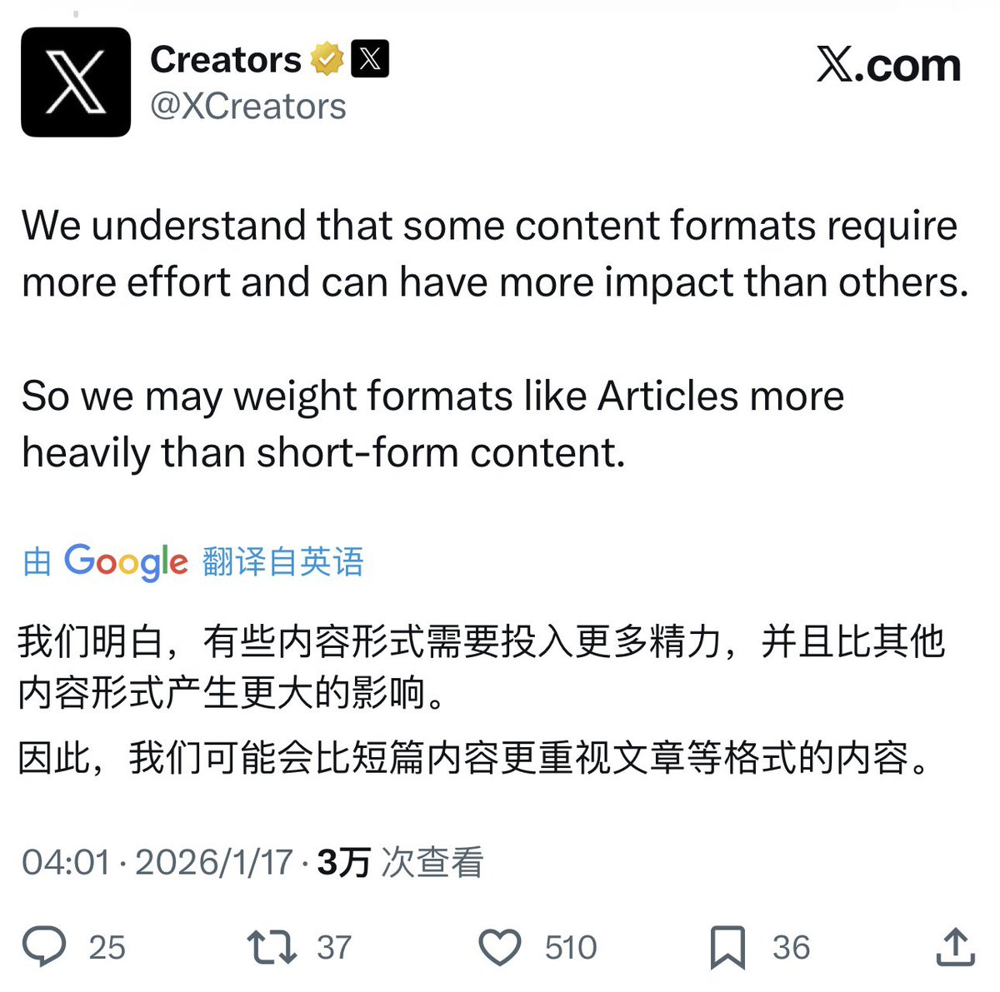
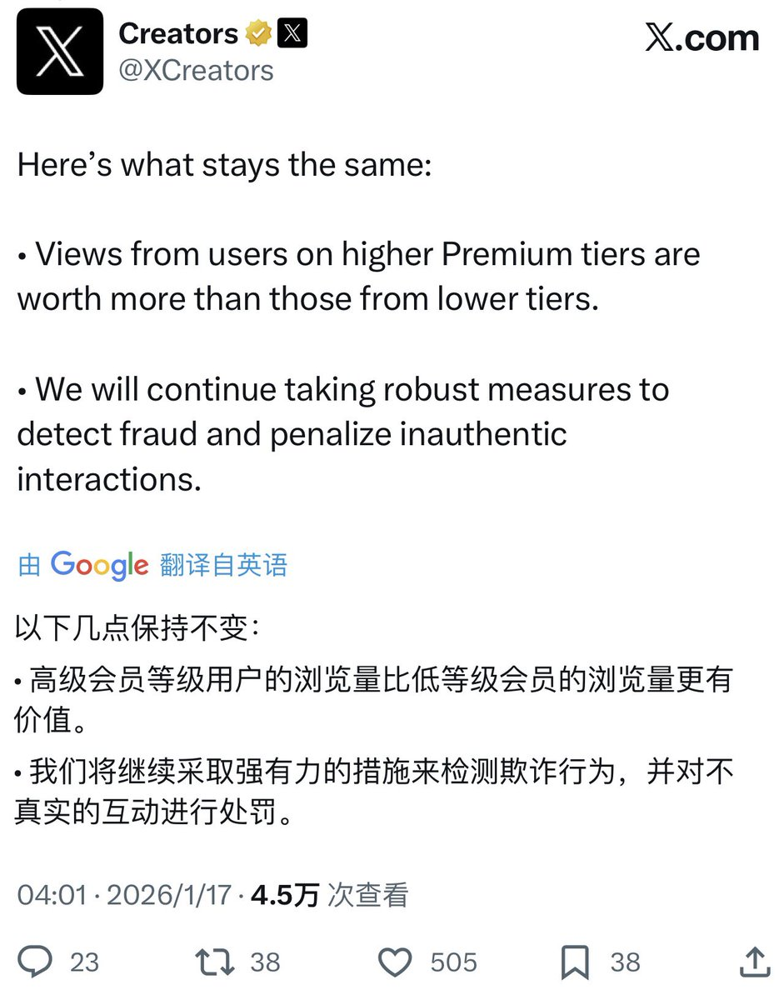

山田リョウ⛩️
@Yamada_Ryoooo
@akokoi1 大佬可以互关一下嘛🥺
我也想领马斯克的低保




WY
@akokoi1
一觉醒来X收益计算方式发生了重大改革！
主要的变化：
1️⃣从原来基于整体互动，改为基于”已验证的首页时间线展示次数”
2️⃣收益来源于Premium付费用户在首页动态中真实看到你帖子的次数
3️⃣内容形式权重调整，长文章（Articles）等需要更多精力创作的内容将获得更高权重 https://t.co/JfEZA8KzDh